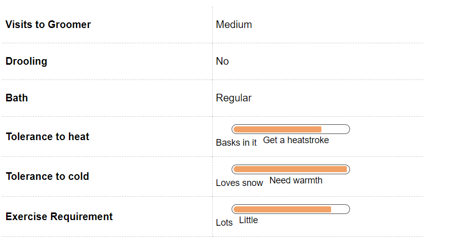
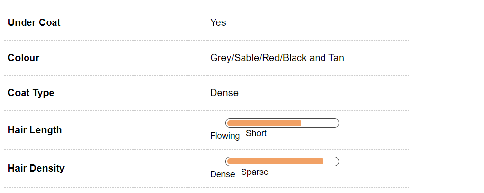
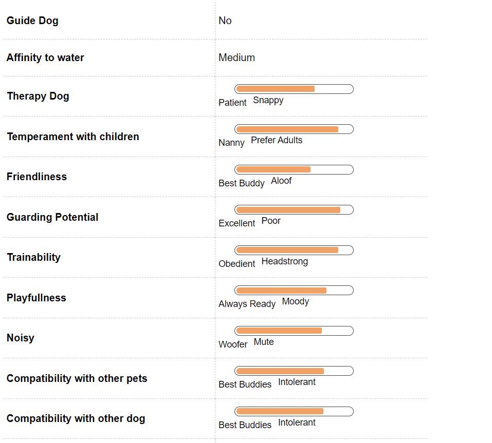
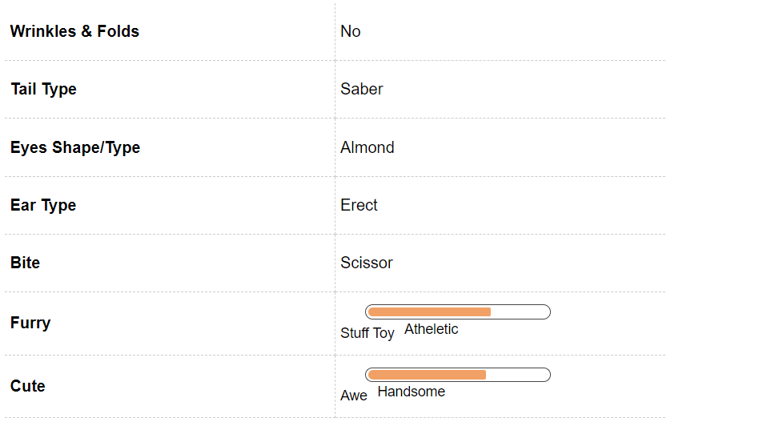

Siberian Husky Dog Breed Information

Introduction
With their gorgeous coats, unique markings and icy eyes, the Siberian Huskies are known and loved the world over for their beauty. Huskies are also immensely intelligent and active dog, an aspect that, sadly, several Husky owners have either under researched or choose to ignore till it’s too late.
It’s safe to say that Huskies are neither for the faint-hearted nor for the first-time dog family. The more research one puts in before deciding to spend their life with this breed, the better.
The image of a Siberian Husky running miles and miles in the snow is an important one to keep in mind; they are not meant for hot climates, unless they are confined to an air-conditioned life indoors.
Siberian Husky is a working dog which comes with a fun personality. Its energy levels are also pretty high and it loves playing around.
Equipped with blue eyes that are known to melt hearts and its soft coat, it is one of the best looking breeds out there. This breed loves working and loves outdoors and has evolved as a breed which works hard.
It loves to run, one cannot stop it from running, it loves running around. This one is also a trouble maker, an expert escape artist, it will find a way to escape and explore.
This one has a thing for wanderlust, it makes a great travel companion. This is a medium sized breed and its origin can be traced to North Eastern Siberia, Russia.
The family that this breed belongs to is Spiltz and it’s recognizable by a number of things such as its coat, the shape of its ears and some markings on its body. This breed is also not aggressive. This breed also doesn’t make great watch dogs, they can be too friendly and trusting of strangers which makes them useless as guard dogs.
This breed Is said to the closest to the original Chuckchi dogs and they can carry loads for a long period of time in harsh weather. One of the most famous stories that goes around in the Siberian Husky circles is how they ended up saving thousands of children.
It was around the year 1925 when in the city of Nome there was a disease called Diphtheria which spread and the anti-toxin was some 1000 miles away. There was partial transportation by train but the rest of the distance, the medicine was carried by a group of mushers and these Siberian Huskies in biting cold.
The medicine reached the village and these Siberian huskies were declared as heroes. This breed has some genetic similarity with wolfs.
There was a time when this breed was used by soldiers in World War 2 for various purposes. It is difficult for first time dog owners to own a Siberian husky.
This breed isn’t too much of a people pleaser or Human pleaser as we say, which makes it difficult to train them especially at home. They respond to training better on the streets.
History
The Siberian Husky was bred by the Chukchi of Northeast Asia and was used to pull heavy loads for long distances in the snow. Huskies were very much family to the Chukchi people, and often slept in their tents, providing warmth to babies.
Huskies were imported to Alaska in 1908 and were used as sled dogs during the gold rush. Their agility led them to be used in the All-Alaskan Sweepstakes, where they continue to be able competitors to this day.
Soon after their import into Alaska, their popularity spread wildly and uncontrollably into the United States and Canada.
They were a carefully bred breed which carries with itself an ancient lineage which can be traced back more than 4000 years. This breed was developed by Chucksi people of North Easter Asia.
The purpose of developing this breed was to majorly help in hunting, carry luggage for long distances as the weather of the region was very harsh. Siberian Huskies were a favorite of the Chuskis and they believed that whoever mis treated a dog wouldn’t be allowed on the gates of heaven.
This breed was also never overworked and treated with kindness and respect.
Unique Aspects
Siberian Huskies don’t usually do too well in apartments and hot climates. Their coat and the padding on their feet are meant to equip them for extremely cold weather, and their bodies are designed to serve athletic, agile dogs.
In warmer places, they will need air-conditioned lives inside the house and loads of exercise outside. Huskies are the Houdini of the canine world.
They are known to be big escape artists, notorious for wandering far from their homes. A large yard with a sunken fence is highly recommended, if you’d like to keep regular search parties at a minimum.
Leash training is a must for Huskies; there is simply no question of taking them on off-leash walks or runs. Huskies rarely bark, but they more than make up for this by often throwing their heads back and howling.
Further, Huskies are not quite known to be great guard dogs, so the howling will not be limited to warning you of a stranger’s presence.
Fun Trivia

You must have seen the majestic Siberian in various movies portrayed as sled dogs, saving humans in adversity. This is true on so many levels these beautiful breeds have been known in past to save the lives of many.
Below we mention some of the famous movies portraying this breed.
Huskies on the silver screen Siberian Huskies have starred in several movies, in their capacity as sled dogs. Eight Below, Iron Will, Snow Dogs, Balto, Due South and the White Fang 2: Myth of the White Wolf are some of the movies that feature this majestic dog.
Vital Stats:
Size:
Medium
Efforts:
Heavy Exercise
Coat Type:
Dense
Under Coat:
Yes
Pros and Cons
| Pros |
Cons |
|
This breed is extremely playful and friendly. It loves running around and playing with its owners all the time.
|
There are certain things about this breed which won’t be appealing also. This breed is a con artist, it loves escaping, It will dig holes, climb over fences and boundaries just to get out of any kind of confinement.
|
|
It can make friends with literally anyone and can be called a socialite. It is also not aggressive, gentle in its temperament, it makes a great companion for the kids in the house.
|
It loves running away. The owners have to be very careful in case their cute husky plans an escape.
|
|
They also make excellent outdoor partners as they love indulging and accompanying their human for all kinds of adventures ranging from trekking, hiking, running. They are a great running buddy as well.
|
There is also heavy shedding that comes with this breed and that makes it tough on the owners. They don’t bark, they howl which might prove to be troublesome for the owners.
|
Siberian Husky Maintenance & Effort

Grooming
If you’re planning on sharing your life with a Husky, invest in a top-of-the-line vacuum cleaner and a sturdy grooming brush. Huskies shed, and shed a lot.
Normally, they shed twice a year – in spring and fall – when they ‘blow’ out their coats, a term that describes excessive hair shedding over a period of two to three weeks. In warmer climates, however, Huskies are likely to shed more often and more vigorously.
The Siberian Husky has a double coat of medium length hair. The top coat is straight and the undercoat is soft and dense.
It is the latter that sheds all year round and more profusely twice a year especially during spring and fall. You will need brush the coat at least twice a week and, in shedding season, almost every day.
This will ensure that there is no matting of the coat and will also ensure less loose hair around the house. On the plus side, Huskies need baths only sporadically and do not have any distinct canine odour.
The coat of this breed comprises of hair which are medium in length. The coat is double. The upper coat or the outer coat has straighter hair and the undercoat is thick.
The undercoat of this breed is relatively softer than the outer coat. This breed blows it coat twice a year and there is also heavy shedding throughout the year.
This breed comes in a number of colors which are not there with any other breed. The most available colors in this breed are a combination of black and white, white/pure white and also gray and white.
There is a lot of shedding in Siberian Huskies almost through the entire year. The coat is also blown off twice a year.
This breed’s blowing hair is also dependent on the season and the climate, a husky brought up in cooler climate will shed less in comparison to a husky brought up in a hotter climate. Regular brushing helps with shredding.
When the coat is brushed once a week, it reduced shedding significantly. This breed doesn’t require bathing regularly as it is cleaner by itself and odor free.
The ears need to check regularly to see if there are any infections and teeth should also be brushed once a while to help prevent any kind of gum problems. The nail trimming should also be done regularly.
Even in extreme heat, the coat of the husky shouldn’t be shaved, the coat keeps the breed cool as well, and it protects the breed against harsh rays of the sun and the UV rays hence the coat should be on most of the times.
Feeding and Nutrition
This breed can function on minimum food but that doesn’t mean that it shouldn’t be fed regularly and a balanced diet. The diet of husky is mostly animal protein and fat and the diet needs to be low in carbs.
This is especially applicable to the huskies. They can also be fed a limited amount of plant matter like berries and roots as that is what they were fed in the earlier times.
The meal should have a major proposition of meat. Huskies are prone to zinc deficiencies and they should be fed a lot of zinc to ensure that they don’t suffer from a zinc deficiency.
Huskies need little food and a lot of exercise and the same is applicable to Huskie puppies. They are very good at converting their calories to energy.
One should avoid feeling the husky right before and right after their exercise time. They need to be fed in proposition and over feeding should be avoided at all costs. Give this breed two medium sized portions twice a day.
Siberian Husky Hair & Coat

Siberian Husky Health & Care
Common Health Issues
Siberian Huskies are generally a healthy breed but, like all breeds, they may be prone to certain breed-specific conditions. Cataracts are common amongst Huskies.
While they mostly occur during old age and do so gradually, some younger dogs may also develop cataracts. Sometimes, vets will advise you to get the cataracts operated, especially in the case of younger dogs.
Huskies sometimes develop a condition called Corneal Dystrophy, which is opacity of the cornea caused by a collection of lipids. It is usually seen in young adults and is known to affect female Huskies more than males.
This is not a dangerous condition and is not known to affect their vision. Huskies may also be prone to Progressive Retinal Atrophy (PRA), a degenerative eye disorder caused by the loss of photoreceptors at the back of the eyes.
While the condition eventually leads to blindness, PRA is detectable at a very early stage and, since it is a gradual process, dogs that develop it tend to also developed heightened capabilities with regard to their other senses, which makes up for the loss of sight.
There are some issues that most breeds are at risk for, which is applicable to the huskies as well. These would include problems like Hip Dysplasia, eye disease etc.
This breed in comparison to other breeds is healthy. This breed also doesn’t require a lot of food and can remain healthy even with lesser food. Though a high protein diet is good for its health.
They are naturally clean and thus aren’t attacked by parasites that much. They are also not high maintenance and not a lot of medical expenditure is needed for this breed. If this breed is lean and fit, there are chances that it will live a long and healthy life.
Cataracts is a huge problem in this breed, about 10% of the entire Siberian Husky Population suffers from Cataract. Other problems in this breed include Follicular Dysplasia and zinc deficiency.
Siberian Husky Behavior

Temperament
It is safe to say that this breed is not for first-time dog families. They need gentle yet firm upbringing and need to be trained early by an experienced and patient family.
Siberian Huskies are pack dogs and do very well with families and especially children. However, this is not a dog that can be left alone.
If their extremely intelligent minds are not kept adequately occupied at all times, they can turn very destructive and use their smarts to wreak havoc in your home. They are affectionate and warm without being needy, but can often be stubborn and test your leadership skills.
It’s important to establish who’s boss quite early with a Husky. This is a high energy breed and will thrive if given ample exercise.
They need experienced handlers who can understand their needs. They are charming and mischievous which can be quite a handful at times.
They are not good watchdogs or guard dogs; they love strangers and are friendly towards them, to the point of inadvertently welcoming intruders into the house
Environment
The Siberian Husky can make the perfect pet for families with children, provided the adults are experienced dog people and not first-time dog families. Huskies are affectionate and even protective towards children and don’t have a tendency to be moody around them.
However, as in the case of all dogs, early socialisation with young children and other animals helps them cope more easily. Huskies are essentially a pack breed, so they tend to do very well with other animals in the house as well.
Smaller animals like hamsters, guinea pigs and birds might be in danger though, because Huskies were bred to hunt in snow covered mountains where food was scarce. A much smaller animal may be seen as prey rather than family! Huskies were not bred to spend hours in confined places.
They need plenty of time in the outdoors and do very well in houses with large yards, provided the yard is firmly fenced off from the road. They were also bred to bear extreme cold, so they don’t tend to do well in warm climates.
If you’re planning on living with a Husky in a warm place, make sure your home is adequately air-conditioned to keep the dog comfortable at all times. Wherever the Husky is expected to live, be sure to give him or her plenty of exercise in a secure space and long walks and runs on leash, to keep them from channelizing their intelligent minds towards destruction
Training & Intelligence
Siberian Huskies are high-energy working dogs, known for their intelligence. However, they can be stubborn whilst training, since they love to test your capacity for being the boss.
Training a Husky will be an uphill task with a person who cannot quickly yet gently establish that he or she has to be listened to. As in the case of all dogs, positive reinforcement is the best way to get results.
Expose your Husky from an early age to different sounds, sights and experiences as much as possible, to ensure a well-adjusted adult dog. Leash training is a must with this breed, since they are famous escape artists. They have a high prey drive, which can be a driving force for their escape, so keep a securely fenced yard. return possessions to their rightful owners.
Siberian Husky Breeding
Procreation
Siberian Huskies are generally healthy, robust dogs with few problems during breeding. They average four to six puppies per litter. Huskies attain sexual maturity between six and nine months of age, but they are still too young to be mated.
If you must mate your Husky, wait till he or she is at least two years old. Finally, as in the case of any breed, ensure that you have found responsible families to take the puppies even before you get them mated, so that they don’t fall into the wrong hands.
If you’re breeding your dog for the first time, ensure that you’re consulting with a vet regularly and have adequate help during the birthing process.
Puppies
Siberian Husky puppies are just like their adult counterparts when it comes to energy levels, so be prepared to be constantly on your feet with these puppies. If the energy is not channelized towards positive learning, they can quickly turn destructive.
Ensure that there is early socialization for these puppies and introduce them to a variety of sights, sounds, textures and scents at an early age. The breed has its history in extremely cold temperatures where food was scarce, so Husky puppies show hunting tendencies at a very young age.
If you have other smaller pets at home, make sure they are socialized early and all play is supervised. Leash training will have to begin as early as three months of age, to control the escape artist in your Husky.
Siberian Husky Appearance

Body
The incredibly beautiful Husky has piercing eyes that will probably be the first thing that gets your attention. The almond shaped eyes are obliquely set and come in a range of different shades of brown and blue.
Sometimes, Huskies can have one brown and one blue eye. They have a double coat with medium length hair.
The top coat is straight, while the undercoat is soft and dense. Huskies shed a lot, especially during spring and fall, when they blow their coats, a term that depicts excessive shedding for a period of 2-3 weeks.
Their coats come in a variety of colours from black to pure white, with several kinds of markings on their face and body, that adds to their overall physical allure. The chest is deep with a muscular and level back.
The feet are compact and extra furry, to ensure warmth. The pads are strong with a web between the toes.
The forelegs are straight and strong. The hind legs, in contrast, are strong and arched to facilitate their great running capabilities.
The head is slightly rounded with a definite stop to the muzzle and the skull and muzzle are of equal length. Huskies have profusely hairy tails, much like foxes.
The tail is carried hanging when the dog is at rest and curved back when attentive. The nose may be black, liver or flesh coloured, depending on the colour of the coat.
The medium sized ears are triangular and are set close together. The ears are also fairly hairy.
The lips are black and close fitting. The life span of a Husky is normally between 13 and 15 years.
An average male Husky stands between 21 and 23.5 inches tall, while the female averages 20 to 22 inches. The male weighs between 45 and 60 pounds and the female, between 35 to 50 pounds.Tail: Fox-brush shape, Sickle curve.